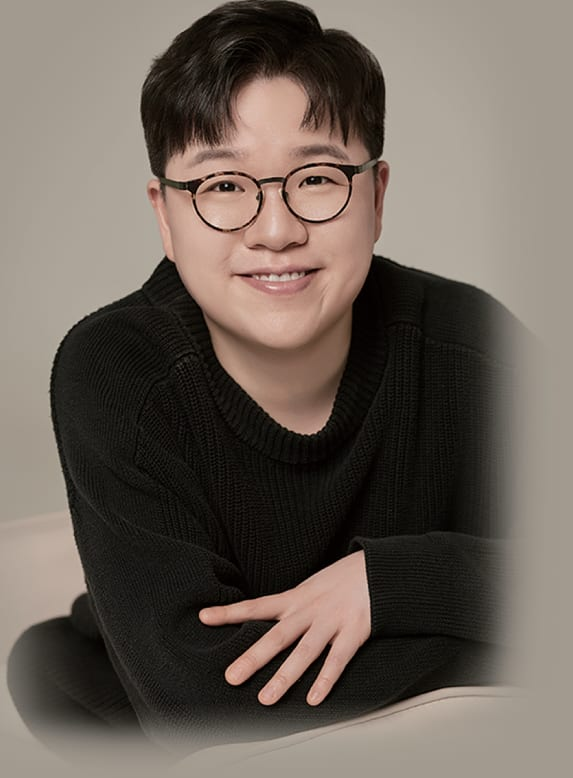
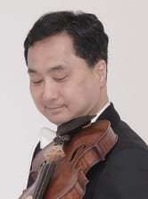

INVITATION
초대의 글
클라리넷의 다채로운 음색과 음악에 담긴 진솔한 이야기를 전하고자 정성껏 준비한 무대에 여러분을 초대합니다.
이번 연주회의 부제는 ‘Circle of Friends’입니다. 모차르트가 가까운 동료들과 깊이 교감하며 클라리넷 삼중주 ‘케겔슈타트’를 탄생시켰듯, 오늘 이 무대 역시 제게 매우 각별합니다. 지난 13년 동안 음악의 길을 함께 걸어온 피아니스트, 비올리스트와 오랜 시간 빚어낸 호흡을 나누는 자리이기 때문입니다. 클라리넷 독주가 전하는 깊이와 오랜 동료들과 함께하는 앙상블의 조화가 관객 여러분께 따뜻한 울림으로 닿기를 소망합니다.
오늘의 제가 있기까지 아낌없이 이끌어주신 은사님들과, 직업연주자로서 음악의 꿈을 펼칠 수 있도록 든든한 디딤돌이 되어주신 학교와 교회, 그리고 늘 함께해 주신 소중한 단체와 기관들에 진심으로 감사드립니다. 아울러 귀한 걸음으로 자리를 빛내주신 모든 분께 머리 숙여 감사 드리며, 오늘 전해드리는 음악이 바쁜 일상에 건네는 다정한 위로이자, 따스한 기억으로 남기를 마음 깊이 소망합니다.

PROFILE
프로필
이재용 JAEYONG LEE
클라리네티스트 CLARINETIST
따뜻한 음색과 맑고 서정적인 선율로 관객과 소통하는 클라리네티스트 이재용은 백석예술대학교와 백석콘서바토리에서 클라리넷을 전공하였습니다.
2016년부터 수원시 힐링문화사업단의 장애인식개선 연주자로 활동하며, 수많은 무대에서 음악을 통한 소통과 공감의 가치를 전해오고 있습니다. 또한 코리아아트빌리티 체임버와 브솔 오케스트라 창단 단원으로서 예술의전당, 아트센터인천 등 주요 공연장에서 꾸준히 무대를 이어 왔습니다.
다채로운 실내악 앙상블을 통해 폭넓은 음악 세계를 구축해 왔으며, 2024년과 2025년 경기문화재단 지원사업에 예술인으로 연이어 선정되어 솔리스트로서의 입지 또한 공고히 다졌습니다. 더불어 2025 서울세계불꽃축제의 피날레 <Never Ending Story>에 클라리넷 연주 음원으로 참여하는 등 장르와 무대의 경계를 넘나들며 연주자로서의 영역을 넓혀 가고 있습니다.
현재 서울특별시 어린이병원 ‘별별하모니아 오케스트라’ 직업연주자로 재직하며 활발한 연주 활동을 펼치고 있습니다.
사사(師事) 김민아 · 김민이 · 나혜수 · 이순형
주요 활동 더 보기
| 연도 | 주요 활동·연주·수상 |
|---|---|
| 2025 | Bridge through Music Ensemble 연주회(경기문화재단) |
| 2025 | 2025 서울세계불꽃축제 피날레 ‘Never Ending Story’ 클라리넷 연주 음원 참여 |
| 2025 | 아트빌리티 다림 (예술의전당 콘서트홀) |
| 2024-25 | 별별하모니아 오케스트라 정기연주회 |
| 2024 | ‘클라리넷으로 펼치는 대화’ 연주회(경기문화재단) |
| 2024 | 제30회 서울오케스트라 콩쿠르 일반부 1위 수상 |
| 2023 | 한국·캐나다 수교 60주년 기념 음악회 ‘INCLUSIVE HARMONIES’ |
| 2022 | 스페셜 올림픽 시상 공연 |
| 2021 | 수원시 힐링문화사업 온라인 음악회 「마음방역을 위한 시간」 |
| 2020 | 서초실내악축제 |
| 2019 | ACSI Korea Music Camp 협연 |
| 2018 | 극동방송아트홀 찬송가 음반 출시 |
PROGRAM
프로그램
노래하는 음색에서 시작해, 세 악기의 대화와 왈츠의 변화, 낭만적인 내면의 노래를 거쳐 퍼커션이 더해진 라틴의 생동감으로 이어지는 프로그램입니다. 서로 다른 음악적 표정들이 하나의 원처럼 연결되며 “Circle of Friends”의 이야기를 완성합니다.
-
Eugène Bozza
1905~1991
Aria
클라리넷 · 피아노
노래하듯 이어지는 선율 속에서 클라리넷의 서정적인 음색과 호흡을 만납니다.
곡 해설 읽기
프랑스 작곡가 외젠 보자의 《Aria》는 1936년에 발표된 단일 악장 작품으로, 클라리넷의 서정적인 음색과 긴 호흡의 선율이 중심을 이룹니다. 바흐와 바로크 음악을 연상시키는 차분한 화성 진행 위로 노래하듯 이어지는 선율이 펼쳐지며, 화려한 기교보다 소리의 결, 호흡, 프레이징의 아름다움을 들려줍니다.
-
W. A. Mozart
1756~1791
Clarinet Trio in E-flat major, K. 498 “Kegelstatt”
클라리넷 · 비올라 · 피아노
- I. Andante
- II. Menuetto
- III. Allegretto
클라리넷·비올라·피아노가 주고받는 친밀한 대화에서 앙상블의 조화를 듣습니다.
곡 해설 읽기
모차르트가 1786년에 작곡한 《Kegelstatt Trio》는 클라리넷·비올라·피아노라는 독특한 편성을 위한 실내악 명곡입니다. Andante–Menuetto–Allegretto의 세 악장에서 세 악기는 어느 하나가 일방적으로 앞서기보다 선율을 주고받으며 친밀한 대화를 만듭니다. 특히 클라리넷과 비올라의 따뜻한 중음역이 피아노와 어우러지며 이번 공연의 부제인 “Circle of Friends”를 가장 직접적으로 떠올리게 합니다.
-
Victor Babin
1908~1972
Hillandale Waltzes
클라리넷 · 피아노
- Theme. Tempo di valse, con garbo
- I. Valse élégante
- II. Valse passionée
- III. Valse sombre
- IV. Valse volante
- V. Valse triste
- VI. Valse de bonne humeur
- VII. Valse brillante et joyeuse
- VIII. Valse oubliée
하나의 주제가 서로 다른 표정의 왈츠로 변주되며 음색과 리듬의 변화를 펼칩니다.
곡 해설 읽기
러시아 태생의 미국 작곡가이자 피아니스트 빅터 바빈의 《Hillandale Waltzes》는 요한 네포무크 훔멜의 주제를 바탕으로 한 여덟 개의 왈츠로 이루어져 있습니다. 하나의 주제가 우아함, 열정, 어두움, 가벼움, 슬픔, 유쾌함 등 각기 다른 성격으로 변주되며, 클라리넷과 피아노가 재치 있게 주고받는 과정에서 음색과 리듬의 변화가 선명하게 드러납니다.
-
Robert Schumann
1810~1856
Drei Romanzen, Op. 94
클라리넷 · 피아노
- I. Nicht schnell
- II. Einfach, innig
- III. Nicht schnell
화려한 기교보다 선율과 호흡을 따라 낭만적인 내면의 이야기를 듣습니다.
곡 해설 읽기
슈만이 1849년 12월에 작곡한 《Drei Romanzen》는 본래 오보에와 피아노를 위한 작품으로, 오늘날 클라리넷으로도 널리 연주됩니다. 첫 곡은 차분하고 서정적인 분위기, 두 번째 곡은 ‘말 없는 노래’와 같은 따뜻하고 내밀한 정서, 마지막 곡은 보다 넓고 극적인 흐름을 보여줍니다. 세 곡은 화려함보다 노래하는 선율과 낭만적인 감정의 깊이에 초점을 둡니다.
-
Michele Mangani
1966~
Tre Danze Latine
클라리넷 · 피아노 · 퍼커션
- I. Contradanza
- II. Vals Criollo
- III. Chorinho
라틴 리듬에 퍼커션이 더해져 공연의 마지막을 밝고 활기차게 장식합니다.
곡 해설 읽기
이탈리아 작곡가 미켈레 망가니가 2019년에 발표한 《Tre Danze Latine》는 라틴 아메리카 춤의 색채를 현대적인 감각으로 풀어낸 작품입니다. Contradanza, Vals Criollo, Chorinho의 세 곡은 서로 다른 리듬과 표정을 지니며, 이번 무대에서는 퍼커션이 더해져 리듬의 생동감과 색채가 한층 풍성해집니다. 서정적인 선율과 경쾌한 박동, 클라리넷의 민첩한 움직임이 어우러져 공연의 마지막을 밝고 활기차게 장식합니다.
Clarinet 이재용 Piano 김태희 Viola 류성진 Percussion 채승엽
GUEST ARTISTS
함께하는 연주자
-
피아노 Piano
김태희
- 경희대학교 기악과 졸업, 아트퓨전디자인대학원 퍼포밍 아트학과 재즈·실용음악전공 석사과정 수료
- 코리안필하모닉 정기연주회 협연
- IBK기업은행 최고경영자를 위한 초청음악회, IMI 전경련 국제경영원 초청음악회, 한미글로벌 창립 22주년 임직원 초청음악회 연주
- 현) 코리아아트빌리티 체임버
-

비올라 Viola
류성진
- 네덜란드 틸뷔르흐, 즈볼레 음악원 졸업
- Oosterhout Symphony Orchestra, Tilburg Conservatoire Orchestra 비올라 수석 역임
- 에이블아트 오케스트라 부지휘자, 시흥청소년교향악단 상임지휘자 역임
- 현) 서초 심포니 오케스트라, 영통 신포니에타 악장 및 수원 아르테즈 앙상블, 코리아아트빌리티 체임버
-
퍼커션 Percussion
채승엽
- 경원대학교 관현악학과 졸업, 오케스트라 지휘 Diploma 졸업
- 웨스턴심포니오케스트라, 후너스필하모닉오케스트라 팀파니 수석 역임
- 인천서구 음악협회 회장, 인천예술인협회 이사
- 현) 약손명가필하모닉, 시흥윈드오케스트라 수석 단원
영상 갤러리
공연 실황과 연습 영상을 준비되는 대로 소개합니다.
무대의 음악과 준비 과정을 영상으로 만나보세요.
영상을 불러오지 못했습니다. YouTube에서 확인해 주세요.
사진 갤러리
연습과 공연의 순간을 사진으로 전할 예정입니다.